一，Linux环境搭建
服务器生产环境基本都是使用Linux操作系统，其特点是高效，安全，硬件资源占用低。
学习阶段通过使用VMware进行Linux系统的虚拟化。
商用环境下一般使用Centos，课程使用的linux也是centos。
其中关于Linux操作系统，有的同学可能接触过ubuntu，它是带桌面的Linux系统，
Centos相交而言体积更小，运行更快。
1.1 VMware安装
如图所示：
第一步，接受协议
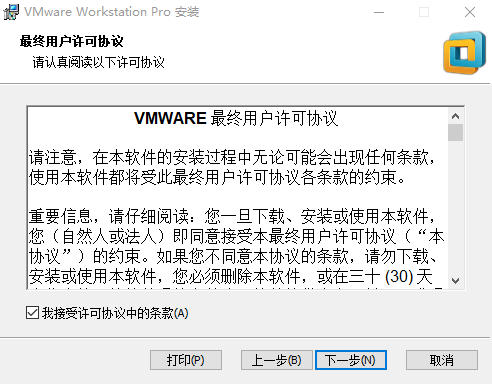
第二步，设置安装位置
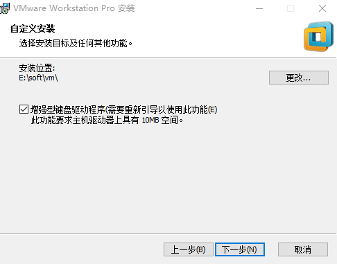
第三步，修改更新策略
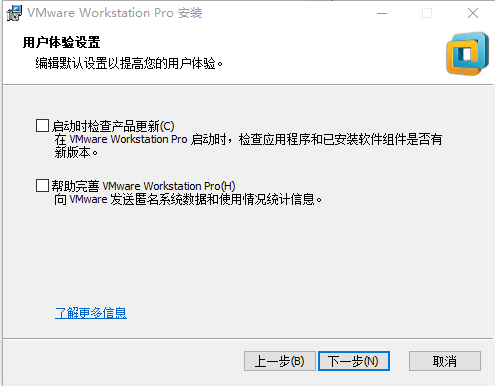
第四步，设置快捷方式
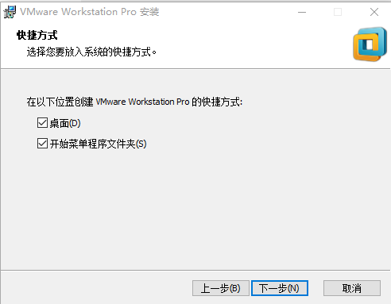
第五步，确认安装。
安装期间不要做多余操作，以免干扰安装进程
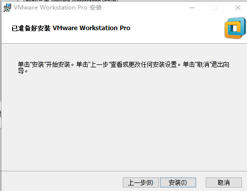
第六步，输入安装包的激活码，进行许可证认证即可。
激活码为：5A02H-AU243-TZJ49-GTC7K-3C61N
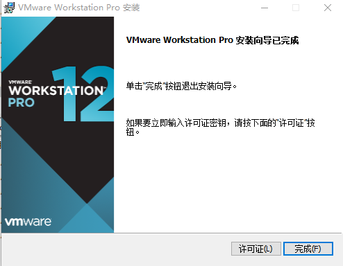
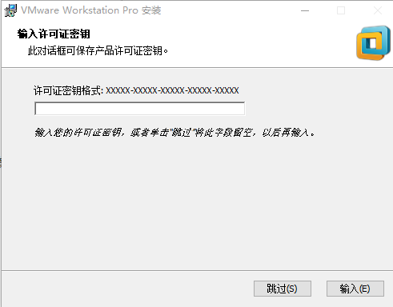
1.2 Linux系统安装
第一步启动vm
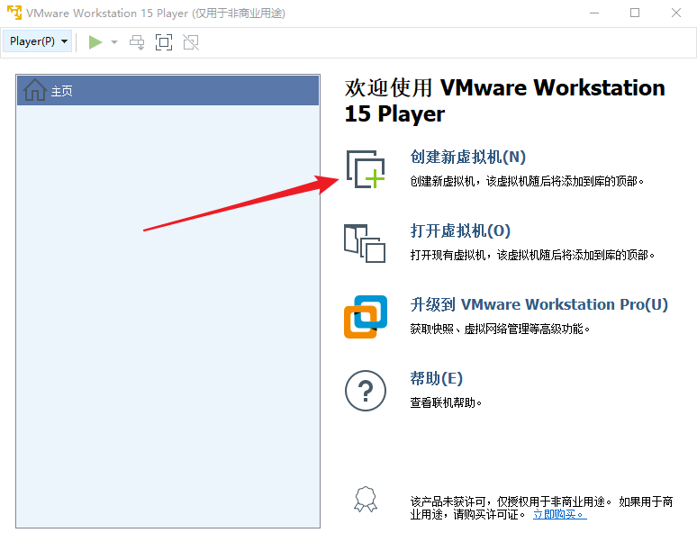
第二步，设置centos镜像文件
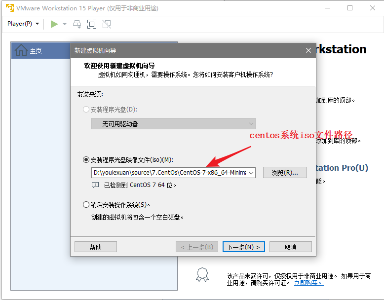
第三步，设置该系统名字和存放位置
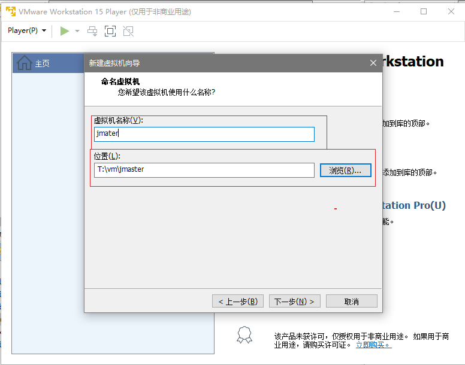
第四步，设置该系统硬盘容量
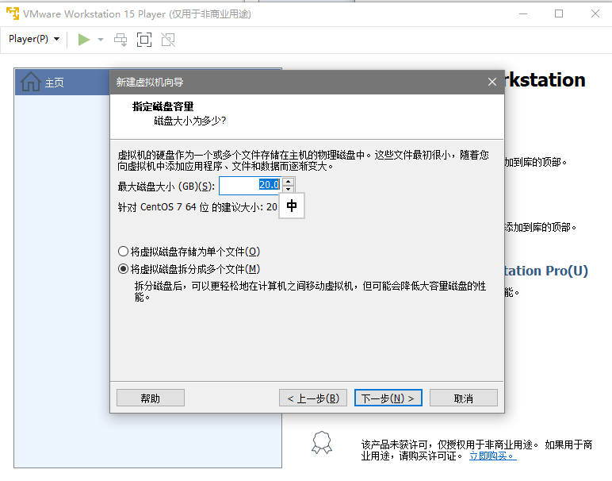
第五步，设置其他硬件规格
学习环境下，一般不做调整
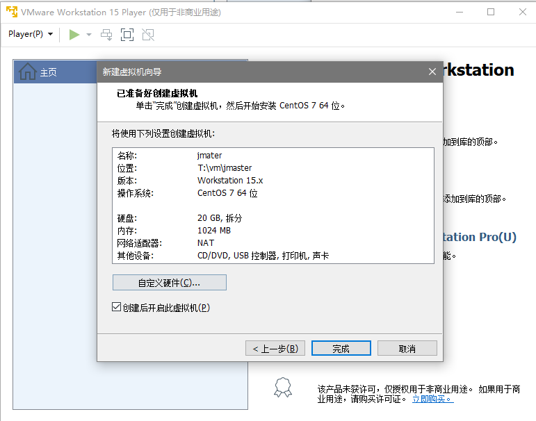
第六步，进入系统安装
选择Install CentOS 7进行安装，安装过程中不做任何修改。
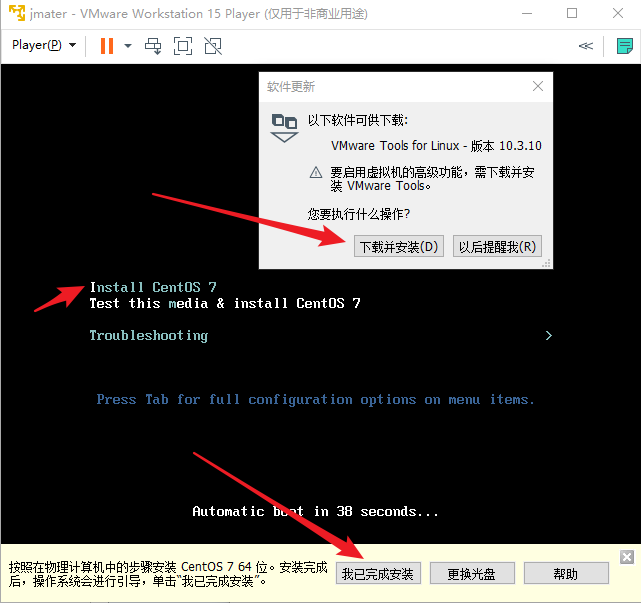
第七步，设置系统语言环境
选择中文即可
第八步，确认磁盘位置
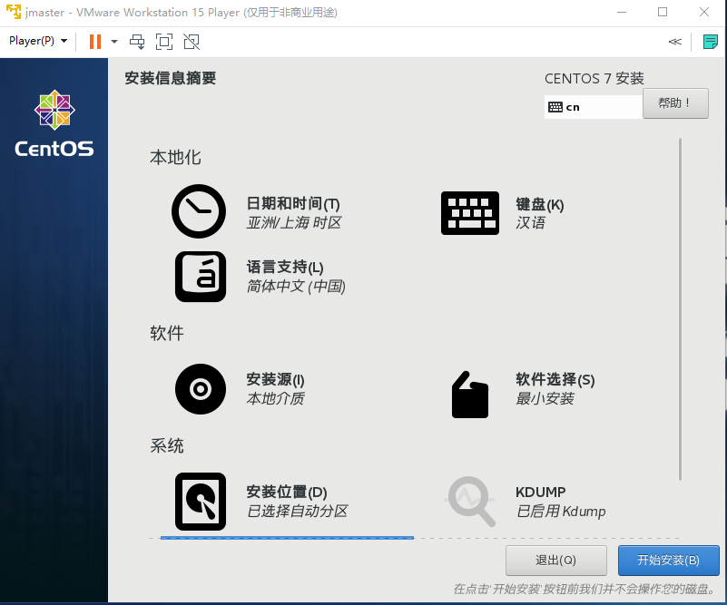
第九步，设置超级用户密码
切记，不要设置过于复杂，避免每次操作出错。
该界面中只设置root密码选项，不做创建用户操作。
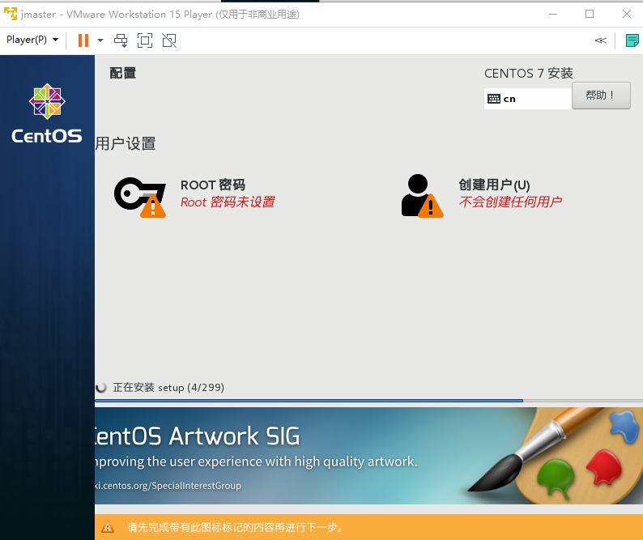
第十步，重启虚拟机
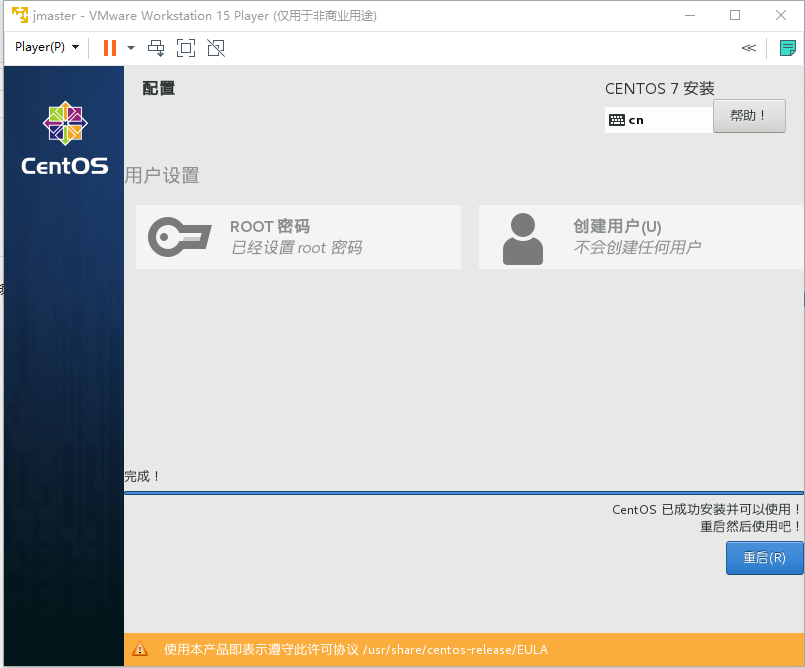
第十一步，登录系统
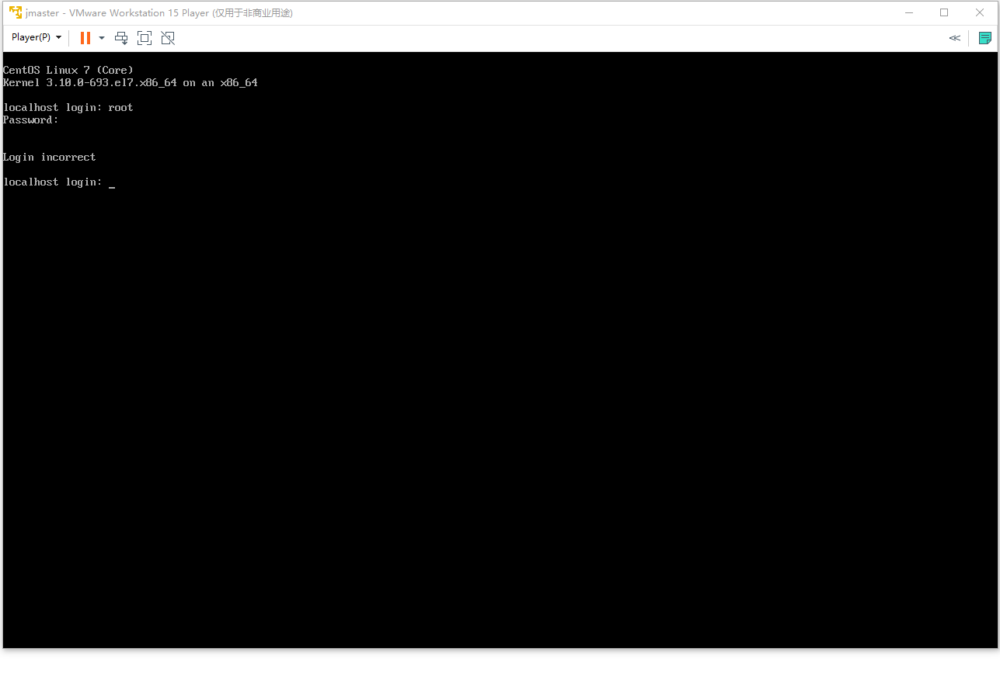
上述界面中:
输入的是用户名，第二次输入的是密码，而且输入密码是没有提示的，所以绝对不能输入错误
第十二步骤，登录成功
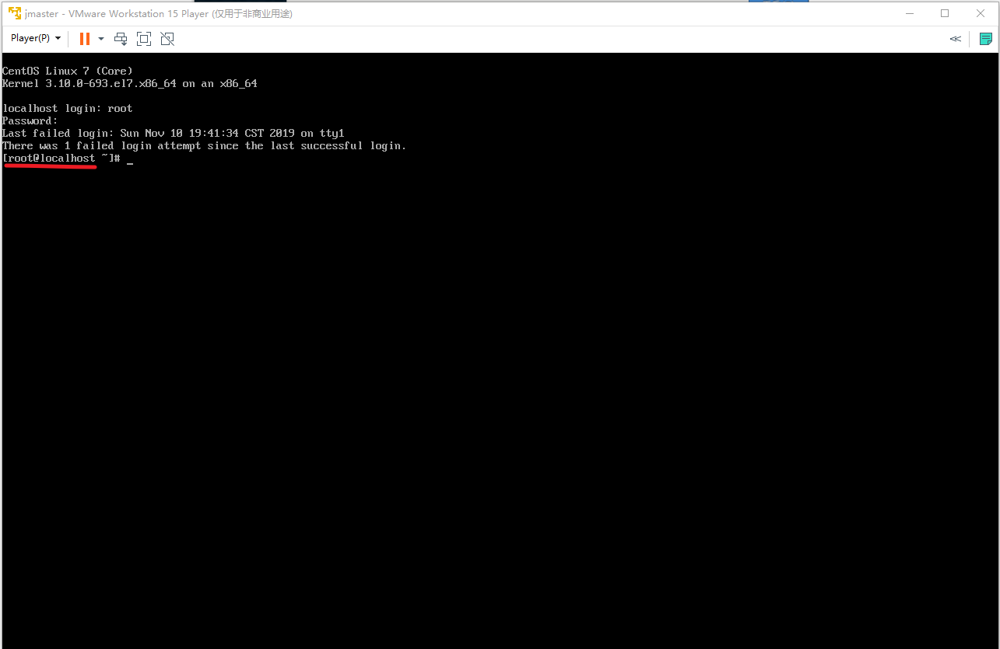